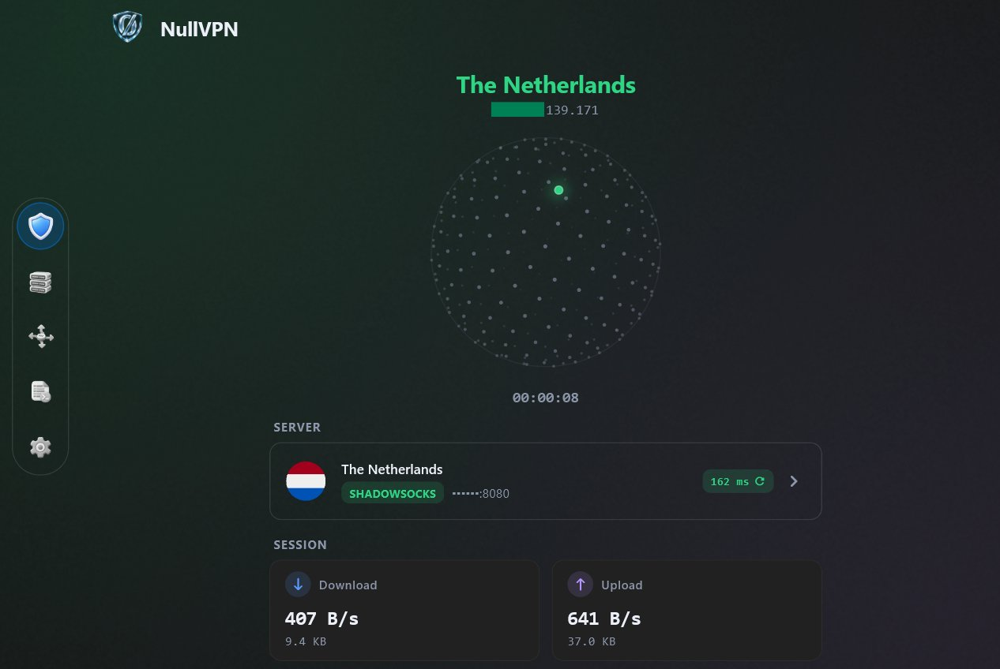

یک کلاینت Xray
رایگان، سریع و ساده
نه تبلیغ، نه حساب کاربری، نه ردیابی، نه چیزی برای خریدن. سرور یا لینک ساب خودت رو اضافه کن، یه ضربه بزن و وصل شو.
آخرین نسخه: صفحه Releases · ویندوز · اندروید · لینوکس · مک · آیفون و آیپد
- Xray
- Aether
- Zeptun
- Psiphon
- Tor

هر چی لازم داری، بدون اضافهها
ساخته شده برای کسایی که یه راه مطمئن برای عبور لازم دارن، روی همون دستگاههایی که دارن.
اتصال با یه ضربه
سرعت لحظهای، زمان سشن و پینگ، همونجا روی صفحه اصلی.
سابها
اضافه کردن با لینک، کد QR یا کلیپبورد، و آپدیت همه با یه ضربه.
پینگ همه، انتخاب بهترین
همه سرورها رو یهجا تست کن و به سریعترینش وصل شو.
مسیریابی هوشمند
سایتهای داخلی مستقیم، چیزهایی که نمیخوای مسدود، بقیه از پروکسی. فایلهای Geo هم خودشون آپدیت میشن.
تنظیمات DNS
DoH، DoT، DoQ و DNS معمولی، همراه FakeDNS.
تانل برای کل دستگاه
حالت TUN همه برنامهها رو میبره، با مسیر سختگیرانه که هیچی از کنار تونل رد نشه.
مخصوص گوشی هم
از دکمه سریع نوار اعلان اندروید یا Control Center آیفون وصل شو، و انتخاب کن کدوم برنامههای اندروید از VPN استفاده کنن.
خودش آپدیت میشه
نسخههای جدید از داخل خود برنامه دانلود و نصب میشن، و قبلش با چکسامهای همون نسخه بررسی میشن.
فارسی و English
پشتیبانی کامل راست به چپ با فونت استعداد، تم روشن و تیره.
سه موتور، کنار هم
هر کدوم یه کار رو خوب انجام میده. لازم نیست بهشون فکر کنی، ولی میتونی انتخاب کنی.
Xray-core
خود تانل: VLESS با REALITY، VMess، Trojan و Shadowsocks روی TCP، WebSocket، gRPC، HTTPUpgrade و XHTTP، بهعلاوه مسیریابی و DNS.
Zeptun TUN
یه موتور سبک و سریع که توی حالت TUN کل دستگاه رو میگیره و ترافیکش رو به Xray میده. پیشفرضه و از موتور داخلی هسته رم و باتری کمتری مصرف میکنه.
Aether رایگان
یه تانل رایگان از طریق Cloudflare WARP یا MASQUE، با Tor اختیاری. نه سرور میخواد، نه حساب، نه ساب. اگه خواستی کشور خروج رو هم انتخاب کن.
پروتکلها
| Protocol | Transports |
|---|---|
| VLESS | TCP · WebSocket · gRPC · HTTPUpgrade · XHTTP |
| VMess | TCP · WebSocket · gRPC · HTTPUpgrade · XHTTP |
| Trojan | TCP · WebSocket · gRPC |
| Shadowsocks | TCP |
| Aether | WARP · MASQUE · optional Tor (obfs4 bridges) or Psiphon |
حریم خصوصی از اول
نه حساب کاربری، نه آمارگیری، نه تبلیغ. NullVPN فقط با اینها ارتباط میگیره:
سرورهای خودت
سرورها و لینکهای سابی که خودت اضافه میکنی.
ip-api.com
برای نشون دادن آیپی و کشورت.
یه لیست عمومی از رلهها
فقط وقتی توی Aether مکان خروج انتخاب کنی.
شناسه دستگاه: خاموش
ارسال شناسه دستگاه به سابها بهصورت پیشفرض خاموشه. فقط اگه ارائهدهندهات تعداد دستگاه رو محدود کرده روشنش کن.
در جریان بمون
آپدیتها و اطلاعرسانیها اول توی کانال تلگرام میان. باگ پیدا کردی یا پیشنهادی داری؟ یه Issue باز کن.